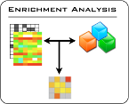
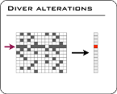
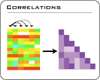
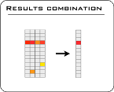

Import data
Start an analysis




News
more details...
Help
Introduction
Data types
and file formats
Importing data
Analysis of data
Visualization of
data and results
Generation of figures
and reports
Tutorials
Download
examples